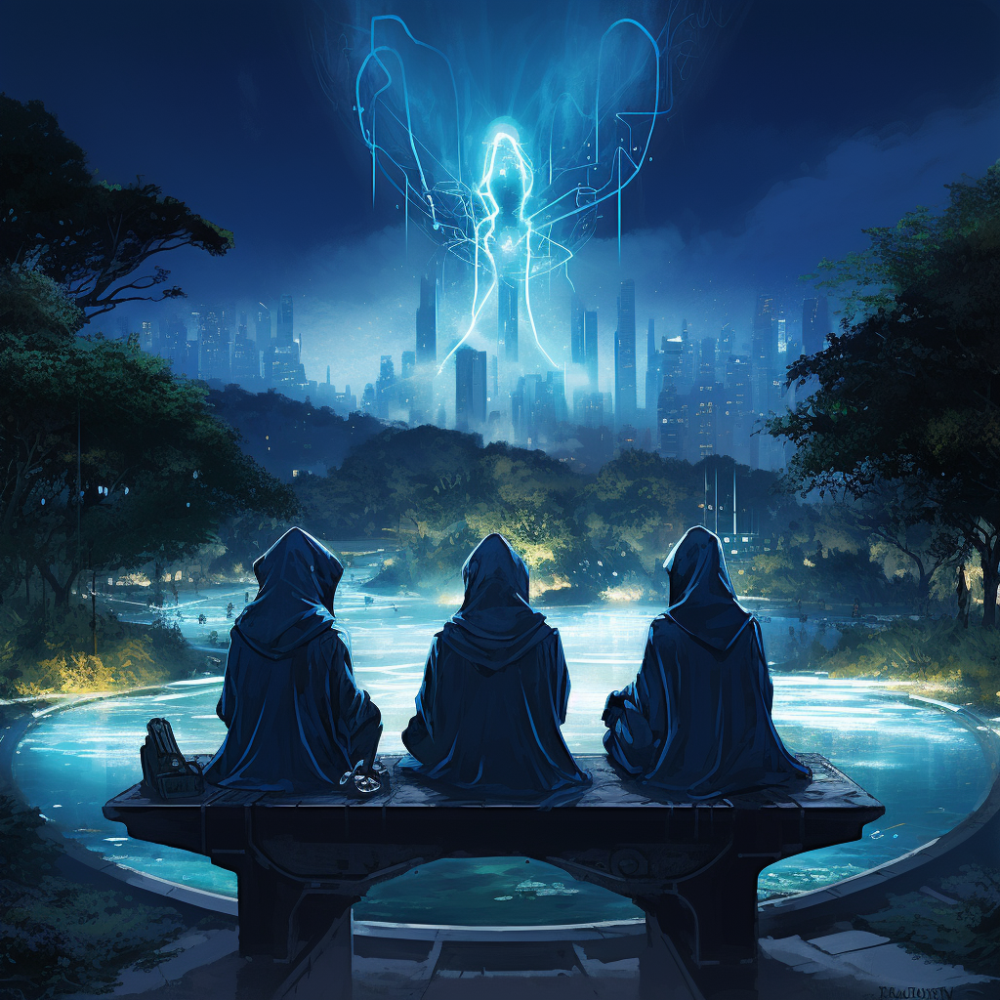

Beneath the watchful gaze of the mystical Black Mountains, the city of Zuzalu pop-ed up, a realm where the wonders of longevity, the magic of decentralization, tales of network-states, and the enigma of crypto intertwined.
The legend stated that somewhere deep in the heart of the city's underground libraries lay a genie—not one trapped in a lamp, but one trapped in a vault of knowledge. This genie wasn't just any genie; it was a vast, omnipotent language model. Unlike other tales where a genie would grant you wishes, the Longevity Genie would answer questions about ageing research and health data, but with unparalleled accuracy.
On a starry night, during the grand Zuzalu Hackathon, visionary alchemists and sages convened.
They spoke with the mighty Large Language Models about reaching healthy longevity and learned their limitations, as they are:
From the fires of Zuzalu hackathon inspired by the ancient legends, the first code of the Longevity Genie was forged, shimmering with promise and echoing the ancient tales.
Its gifts were many:
As dawn broke, a new beacon appeared on the horizon: the Longevity Genie Organization on GitHub. Within its open-source repositories, the secrets and spells of the Longevity Genie were shared, inviting all to partake in its magic. Behind this grand endeavor, a group of visionaries included:
Together, they embarked on a quest to unveil the magic of the Longevity Genie to the world. Yet, for the legend to flourish, more was needed. The call went out across Zuzalu and beyond: gitcoin funding is required to propel the project forward, to let the Genie's grant three wishes: